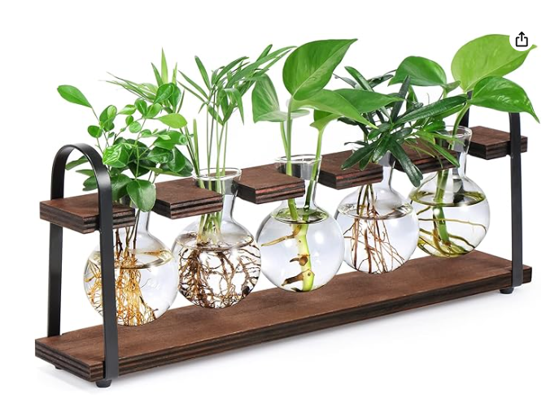
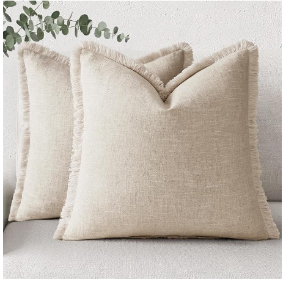
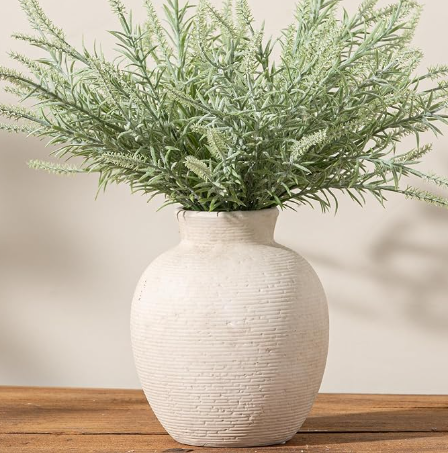
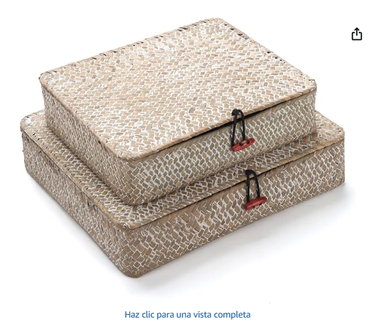
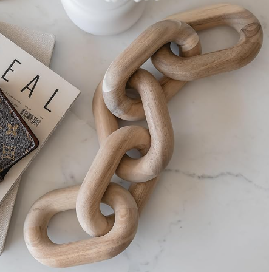

Small-Space Living · Under $45
The trick isn't buying less — it's buying lighter. Swap heavy, dark pieces for woven texture and pale wood, add height instead of floor clutter, and hide the mess in something that looks intentional. Here are 5 finds that do exactly that, all under $45.
🏠 5 picks · 💲 all under $45 · 🪴 small-space tested

This is the height trick in one object: five glass bulbs of rooting greenery sit on a slim wood-and-metal frame that takes up almost no floor space but pulls the eye upward — instantly making the ceiling feel taller and the room feel less boxed-in.

★★★★★ 4.7 · 3,860 ratings
Dark or busy-patterned pillows read as visual weight sitting on your sofa. Swapping in a pale, textured linen with a soft fringe edge lightens the whole seating area without changing a single piece of furniture.

★★★★☆ 4.5 · 690 ratings
An empty console table or shelf corner reads as "unfinished," which makes a small room feel cluttered by contrast. One soft, low-maintenance stem arrangement fills that dead space without adding real bulk. Note: pair with any small textured vase you already have — the vase shown is for styling.

★★★★★ 4.6 · 512 ratings
Clutter is the #1 thing that makes a small room feel smaller. These hide remotes, cables, and mail in a woven texture that reads as decor, not storage — so the surface stays clear without a trip to a bin aisle.

★★★★★ 4.8 · 2,015 ratings
A tall, dark coffee-table centerpiece blocks sightlines across a small room. This one sits low and pale, adding a sculptural moment without cutting your eye-line to the rest of the space.
Reduce visual weight, not floor space: swap bulky dark objects for light-toned wood and woven textures, use vertical elements like tall greenery to draw the eye up, and hide clutter in matching storage instead of open shelving.
Not if it's kept vertical and off the floor. A tall propagation stand or a single tall vase reads as height, not clutter, while low, low-profile pieces on furniture take up almost no visual space.
Warm neutrals — oatmeal, bone, natural wood tones — read as more spacious than dark or highly saturated colors, because they reflect more light and blend into each other rather than creating hard visual stops.
If you only try one thing from this list, make it the propagation stand — height does more for a small room than almost anything else on this page.
Check price on Amazon